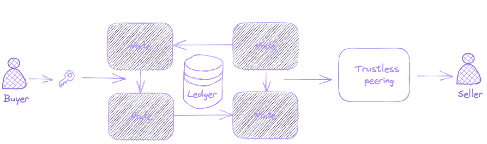
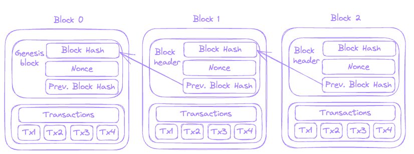

Blockchain Intro: Use Cases and Consensus
Why do we need blockchain?
In the world where we desperately need to cooperate Blockchain answers the question of how to establish trust between unknown people who want to carry out value exchange.
It satisfies the need for a common system that keeps track of transactions, establishes public trust and maintain it forever.
Let’s take a look at examples of blockchain in different sectors first to understand use cases.
- Financial sector - Lendoit - provides Peer-to-Peer Lending. The benefits of this blockchain solution are:
- Increased efficiency in loan approvals, providing a faster time to market
- Elimination of third parties in the lending process, resulting in both cost efficiency and a reduction in manual errors.
- Healthcare - Medicalchain - uses blockchain technology to securely store patient health records. Medicalchain maintains a single version of what is considered the medical truth, which is the original medical data.
- Logistics - TrustChain - enables customers to track their jewelry from source to dealer. The main benefit realized from TrustChain is transparency across the entire diamond, gold, and finished jewelry supply chains.
So what is Blockchain?
Blockchain is a globally shared and secured data structure that maintains a transactional backend database that is immutable.
In a blockchain, transactions are combined into blocks, which then are validated and linked into a chain. 
The blockchain ecosystem includes blocks – the data structure used to keep records of transactions, which are distributed among all nodes in the network, and nodes – a user or computer that holds a complete copy of the record or ledger.
Consensus
Consensus means the method used to come to an agreement. So, consensus in a blockchain is how the blockchain nodes “come to agreement” over the blockchain transactions that will be written to the blockchain ledger.
Proof of work is the most widely used consensus method. It was the original protocol and has proven its resilience against internal and external attacks. 
A high-level overview of the PoW consensus in Blockchain is that a block including relevant parts of the transaction is hashed, and a random nonce is added to it so that the resulting hash is equals or below a certain value, which is called the difficulty level.
"20 October 1 12:30 John refunded Alice $100" -> bc07effbdbd4a902062cdd76e0e5450a4f681796fd4f9f2e4295d90e6008236f
"20 October 1 12:30 John refunded Alice $100???" -> 0000……
"20 October 1 12:30 John refunded Alice $10021609" -> 00009aaee3d8187b5f551d1f04ae32c5c7f81742e88df81adbae4e3d5cdfcba6
This is an example of Proof of work algorithm finding a value that needs to be added to receive a hash that starts with “0000”.
Why mining is required?
Because of the usage proof-of-work algorithm. The “work” is “proven” by running computations to solve a puzzle — generating a hash that matches a specific pattern. In example above this pattern would be starting with “0000”. Not all Blockchains use proof-of-work consensus and because of this do not require miners.
In this article we took a look at some Blockchain use cases, its definition and its backbone - consensus.
Sources: